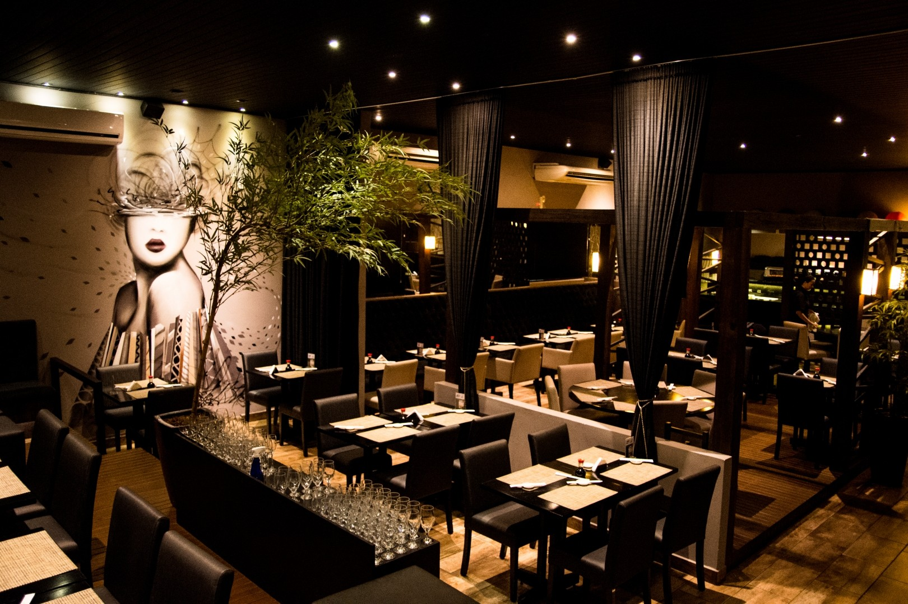
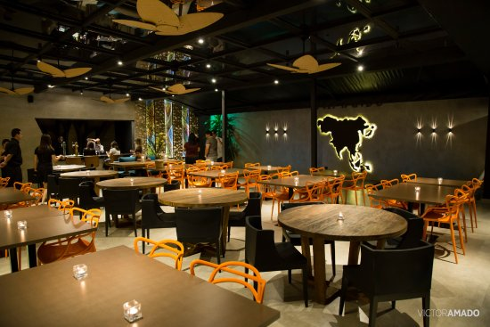

Direto do Velho Oeste para a vida dos brasileiros, o Billy The Grill chegou às praças mostrando a que veio com seu Churrasco na Pedra. Com um tempero único e refeições completas, o Billy é a pedida ideal para se sentir mais próximo de casa. Sua comida é fresca e de verdade e, sua apresentação e serviço são dignos dos heróis do faroeste.
No Billy The Grill os ingredientes são fresquinhos e de boa qualidade, como aqueles que a gente usa em casa. Seus pratos são preparados diariamente por cozinheiros, com carinho e dedicação.
Além do tempero especial, acreditamos que uma pitada de afeto sempre cai bem! O Billy é para aqueles que querem se conectar com um lugar de cuidado, com sabores únicos e ao mesmo tempo familiares.
Seja um amigo, um familiar ou um desconhecido: nós pensamos que todos ao nosso redor merece respeito e carinho. Acreditamos que ao ajudar, somos também ajudados e, por isso, damos sempre o nosso melhor.
Somos uma família. Fazemos parte de um time que acredita em relações verdadeiras e estamos juntos no desenvolvimento e aprendizado de cada um.
Queremos que as pessoas se sintam bem quando provam da nossa comida caseira, que os sabores e temperos os levem para um lugar de afeto e memória.
IMPORTANTE!!!!
O Billy The Grill tem 2 turnos no período da manhã e no período a noite, como você podera notar na tela de inicio está os ambientes noturnos, já na tela de ambientes será do período da manhã.
 
Estamos localizados : Avenida Ator José Wilker, 605 - Bl. Ásia, sl. 736 - Barra da Tijuca, Rio de Janeiro/RJ
Site desenvolvido por Leonardo Da Cruz Ramos